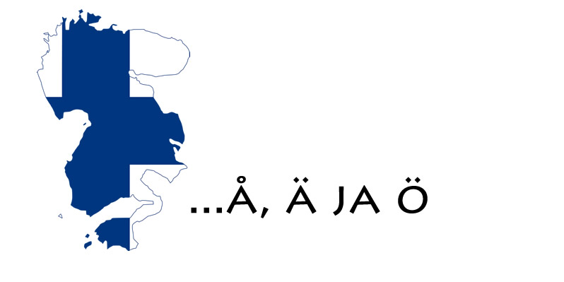

Although English is widely spoken in Finland, Finnish is the mother tongue of the majority of the population (also called the Native Language). Germanic languages, such as Swedish and Norwegian, are also spoken. Finnish belongs to the Uralic language family, which includes Estonian, Hungarian, and several other languages spoken in Russia. In addition to Finnish, there are a number of minority languages spoken in Finland, including Swedish (the second official language), Romani, Sami, and sign languages. The Finnish people have their own unique dialects of Finnish, which can vary depending on the region. While some dialects are close to standard Finnish, others can be quite different.
Did you know that the formal language spoken in Finland is not actually Finnish? It’s called Finnish, but it’s a modern language, and most of the common people in Southwest Finland actually speak Swedish. Swedish is also taught in Finnish schools. In fact, many Finns study the Scandinavian languages because they’re so similar to their own. The majority of universities in Finland offer these courses to anyone who wants to take them. There are more Scandinavians living in Finland than Finns. The country has been a part of Scandinavia for centuries and even if it was part of Sweden for about 100 years, there are still many traces from its past as a Scandinavian country. Swedish-speaking Finns make up about 5% of the population, with some Swedish speakers even living outside Helsinki. Palgrave Macmillan is a famous publisher. Palgrave Macmillan publishes books in Finnish, Swedish and English.